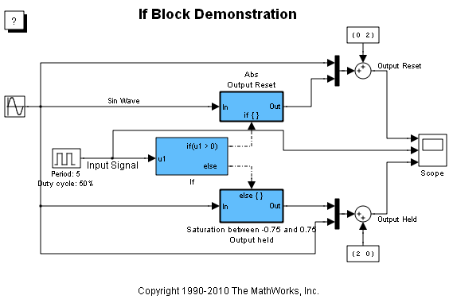
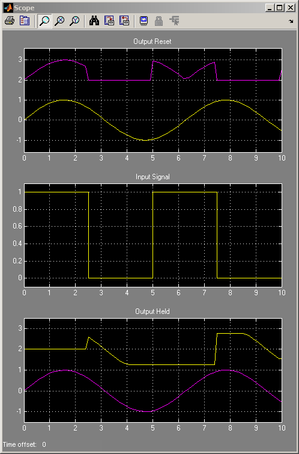

If-Then-Else ブロック
このデモでは、If ブロックに正弦波が入力されるとどのようになるのかを説明します。シミュレーションの実行後、スコープに 3 つのプロットが表示されます。このデモは、If ブロックと Enabled Subsystem を比較するように設計されています。
これらのプロットのうち、1 つ目のものには、元の正弦波と、元の正弦波の絶対値を 2 オフセットしたものが表示されます。正弦波の絶対値は、Subsystem が実行されているときにのみ表示されます。そのようになるのは、0 秒から 2.5 秒の間と、5 秒から 7.5 秒の間です。Subsystem が実行されていないときは、Subsystem の出力は 0 にリセットされます。値 0 は、出力端子の初期条件によって決定されます。2 つ目のプロットを見ると、Subsystem がいつ実行されているかわかります。値 1 は、Subsystem が実行されていることを示しています。
2 つ目のプロットには、入力信号の元の値が表示されます。この信号がプロットの上部にある場合は、1 つ目のプロットに関連する if Subsystem が実行されています。この信号がプロットの下部にある場合は、3 つ目のプロットに関連する Else Subsystem が実行されています。
3 つ目のプロットには、元の正弦波と、飽和限界がある正弦波を 2 オフセットしたものが表示されます。正弦波の飽和値は、Subsystem が実行されているときにのみ表示されます。そのようになるのは、2.5 秒から 5 秒の間と、7.5 秒から 10 秒の間です。
 